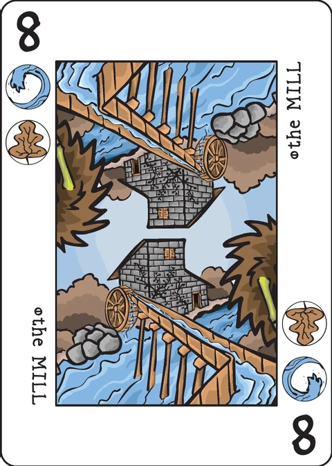
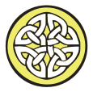

Shed
trick-taking by card type, 2–5 players · 10 min/player · 1 token of each suit per player
Players start the game with a pool of tokens matching the Decktet's suits and then they try to get rid of them through careful trick taking.
Components
Basic Decktet A, 2-9,
( and
optional)
Tokens, 5 in each of the Decktet's 6 suits (assemble your own or get the "basic" set)
Setup
Players start the game with a pool of 6 tokens: one in each of the Decktet's suits (see the Variant section for a fun alternate setup).
No Token Keeper is required, but as the game progresses a token discard pile will form and grow. Keep this pile of discarded tokens nearby - some of them will enter back into the game!
The Dealer for the first hand will be the person whose pet sheds the most. He will then deal
each player a 7 card hand. The rest of the deck is placed face down within easy reach of all
players to form the draw pile. Depending on the number of players in the game, set aside a
remainder unseen each hand as follows:
In a 3 player game, set aside a remainder of 3 cards; in a 4 player game set aside 4 cards and
in the 5 player game, set aside the last card as the remainder.
If you are using the Pawns and/or Courts, see the Extended Deck section below for the size of
remainder for your game.
Cards follow their usual rank order (low to high): A, 2-9, , , . Aces rank zero in all tricks except when they lead. An Ace will win its own trick when its matching is played or when no other player is able to follow suit (details below).
Game play
Choose the Type of Trick being played
Players each play one card per trick. The player on the dealer's left will lead the first trick. He dictates the type of trick being played by selecting a card from his hand and playing it front of him on the table. The card will belong to one of these groups:
- Personalities — the "face" cards of the Decktet
- Locations — indicated on the cards by a bisected circle
- Events — indicated on the cards by a solid black circle
- Ace Suits
Continuing clockwise around the table, players must follow the chosen lead and play a card from their hand of its type.
Example: The lead card for the trick is The Soldier (5
). All subsequent players must play a Personality card to this trick. If they are unable to do so, they must still play a card from their hand and thus will have no chance of winning the trick.
Note: This is new territory for determining "suit" in a Decktet game and forces players to think about the cards differently. Although it is not necessary, you may wish to refer to the table (on page 134) in the Decktet Book: "Summary of Cards by Interpretive Type" before playing your first game. This table has been generously reproduced by the author and can also be found on page 9 here. At a glance it will become obvious that the three types of cards are well distributed through the ranks, which offers Shed a fine balance. On the other hand, the distribution of types through the s, the s, and the s makes things very interesting for this game!
Winning the Trick
The highest ranked card played which matches the type indicated by the lead wins the trick. The winner will lead the next trick.
Example: The Soldier (5 ) has been played to start the trick. The next player follows type and plays The Lunatic (6 ). The Sailor (4 ) is played next and the last player doesn't have any Personality cards in his hand. He plays The Castle (7 ). The Lunatic player wins and he will lead the next trick.
Tiebreaker Rule
In the event of a tie, the last card played which matches the rank of the highest card on the trick wins (provided of course that it matches the type of lead). To continue the example, if either The Sailor or The Castle player played The Penitent (6 ) instead, they would have won the trick.
Shed a token
The trick winner may shed one token from his take to the supply which matches one of the suits on the lead card - his choice. Tricks led with Aces and s allow the winner to shed one token of its suit.
Example: Cards on a trick were played in this order:
The Soldier (5 ) — The Lunatic (6 ) — The Sailor (4 ) — The Penitent (6 )
The Penitent player wins and he must shed either a or a token to the supply. He will lead the next trick.
All tokens of a suit have been shed
If the winning player has already shed all tokens of the suit(s) indicated by the lead card from his take, he must select a token that matches one of these suits from an opponent of his choice and add it to his own take as a penalty! If no players have a token which matches the lead card, the trick winner must take a matching token (his choice) from the supply and add it to his take.
Leading an Ace
Players may choose to lead an Ace. An Ace trick is one which is won on the merits of rank and suit only. All players must play a card from their hand which matches the suit of the Ace - the type of card doesn't matter. If a player doesn't have a card of the suit dictated by the Ace, he must still play a card and will have no chance of winning the trick. The highest ranked card of the Ace's suit will win the trick. Here are the two ways an Ace will win its own trick:
- If the Ace's matching is played, the Ace is the high card on the trick and wins.
- If the Ace is the only card of its suit played to the trick, the Ace wins.
Three special cards
The Origin (2 ), The Market (6 ) and The End are ambiguous card types and are considered to be either Locations or Events. Players can play these cards to tricks of either type. If any of these 3 cards leads a trick, the lead player must announce what type of trick it is when he plays the card: Location or Event.
Note: If any of these 3 cards are played to a trick led with a Location or Event card, the ambiguously suited card is considered to be following type.
Example: The end of the round is near and players only have a few cards left in their hands. The Desert (2 ) is led and one of the other players is holding the Ace of Wyrms, The Merchant (9 ) and The End . Unfortunately, he is out of Sun and Wyrm tokens and doesn't want to win the trick. Too bad! He must play his Crown to follow type (Location) - he can't claim that The End is an Event card for this trick and avoid winning. If he wins, he must take either a Sun or a Wyrm token from an opponent and add it to his take as a penalty.
New Trick and End of the Round
After the trick has been scored, the cards are set aside face down in the discard pile and
everyone (starting with the winning player and continuing clockwise) draws a card to replenish
their hands to 7 cards. When the draw pile has been exhausted, play continues until all cards
have been played.
If the victory condition has not been met and all cards have been played, the new Dealer is the
player on the old Dealer's left. He will shuffle all of the cards including the remainder. The
first player in the new round will be the player on the new Dealer's left.
Game End
When a player sheds his last token, the game ends immediately and that player is declared the winner.
Kingmaker Scenario
On the odd occasion, a game will end with a player being forced to choose between two (or possibly more) players who have the same token in their take, thus having the power to choose who the winner will be.
Example: Near the end of a three player game, two players have one Wave token each and the third player has a Moon and a Sun. It is the last trick and the third player leads his last card: The Mill (8 ) and wins the trick (Ouch!). There are two ways to resolve this situation - choose the solution which best suits your playing preferences.
- The game ends at this point and the two Wave holders share the victory. This is the way we play it at home. We don't think of it as a shared victory as such, but rather that the third player has gone down in defeat.
- Some players will not be keen on this scenario and will want a definite winner at the end of the game. This is especially true if you are playing a round robin series of games with the winner being the first player to win a target number of games. In this case then, the player who would normally take a token from another player will take a token from the supply as his penalty. To continue the example, the player who won the hand with The Mill would choose a Wave or a Leaf token as his penalty from the supply and the game would continue until a clear winner prevailed.
The extended deck
The and cards fit seamlessly into a game of Shed and are recommended once you have a few games under your belt. If a or is the lead card on a trick, the victor may shed one token from his take which matches one of the card's 3 suits - his choice. Be careful as the endgame approaches though - winning a trick led by a or could have dire consequences if you don't have any tokens in those 3 suits. Chances are, an opponent will!
Size of remainder for games using the extended deck:
- 3 player game with Pawns = 4
- 3 player game with Pawns & Courts = 2
- 4 player game with Pawns = 4
- 4 player game with Pawns & Courts = 4
- 5 player game with Pawns = 5
In the 5 player game with Pawns & Courts, just deal each player 8 cards and set aside the final 4 cards as the remainder.
Variant
This random starting take is a fun variation and ramps up the tension from the very first trick: Count out 1 token in each suit per player, throw them into a bag, mix them up a bit and then fish out 6 random tokens per player for their starting take.
Partnership Rules
Shed can be played in partnership with players on each team sitting on opposite sides of the table. Each player plays one card per trick and play proceeds clockwise. The winning team will be the first to shed all of their tokens.
The rules are adjusted as follows: Tokens are held by one player on each team. Each team starts with 6 tokens (1 in each suit or use the Variant). The and cards are not used in the partnership game. Each player starts with an 8 card hand. The remaining 4 cards are set aside unseen for this round.
The point values of partner's cards played to a hand may be added together for a combined score if they are of the same type. Ranked cards score their number and s score 10.
The Ace rules are adjusted as follows:
An Ace scores zero unless it leads the trick. If an Ace leads, it scores 1. If an Ace's matching is played on its lead by either team, the Ace will score 11.
The tiebreaker rule remains the same, with the trick being awarded to the team that plays the card which ties the score.
The winning team may shed a token which matches a suit with the lead card. Partners may collaborate on this decision after the trick has been played.
The next trick will be led by the player who played the highest ranked card (which matched the lead) on the winning team. If both players played a card of equal rank which matched type with the lead card, the second player will lead the next trick.
Example: Cards on a trick were played in this order:
The Darkness 9( ) — The Cave 7( ) — The Painter 3( ) — The Castle 7( )
The Darkness is the lead card, but his partner didn't follow the type of lead (Location) and played a Personality card (The Painter). Thus his rank of 3 cannot be combined with The Darkness, so the team's score is 9. The Cave followed type (Location) and his partner played The Castle, which also follows type. Its 7 is combined with his partner's 7 for a score of 14 and they win the trick. The Cave/Castle team may now shed a or token - their choice. The Castle player will lead the next trick.
2 Player Rules
Shed – like Gasp! – was conceived as a multi-player trick-taking game available to partnership play. Until these 2 games came along, my favourite trick-taking games were Euchre and Tressette. I have played 2 player versions of both and while quite enjoyable, the 2 player versions were not the same as the "real thing" in my mind. Still, playing with 2 is better than not playing at all and I offer this same caveat for Gasp! and Shed in their 2 player clothing. With that said, here is a way to play Shed with 2:
The rules are the same as in the standard game, but are adjusted as follows: Each player starts with 6 tokens (1 in each suit or use the Variant). The and cards are not used. Each player starts with a 10 card hand. 4 cards are set aside unseen as a remainder each round. After each trick, each player draws 1 card to their hand.
Each player plays 2 cards on the same trick and play alternates A-B-A-B.
The point values of player's cards played to a hand may be added together for a combined score if they are of the same type. Ranked cards score their number and s score 10.
The Ace rules are adjusted as follows:
An Ace scores zero unless it leads the trick. If an Ace leads, it scores 1. If an Ace's matching is played on its lead by your opponent, the Ace will score 11. If you play the matching after you lead the Ace, the Ace still scores 1.
The tiebreaker rule remains the same, with the trick being awarded to the player that plays the card which ties the score.
The winning player may shed one token which matches a suit with the lead card.
The next trick will be led by the winning player.
Special Thanks…
…to my wife and son for playtesting various versions of the game which didn't work out. Several of our games resulted in comical endless loops and were abandoned before they finished. My wife ultimately came up with the solution to the scoring problem which allowed the game to end in a reasonable length of time (the "All tokens of a suit have been shed" rule). This solution has the bonus of adding great tension to the endgame.
Thanks also to P.D. Magnus and his Decktet group for suggesting solutions to the Kingmaker scenario.
Links
Note on this implementation
The two-player variant, exactly as written: 10-card hands, 4 cards set aside unseen as the remainder, the other 12 in the draw pile (10 + 10 + 4 + 12 = 36); Pawns and Courts are not used — this app plays the basic 36-card deck only. Each trick takes four cards in A-B-A-B order, and after each trick both players draw exactly one card (the winner first) while the draw pile lasts; when it runs out play continues until all cards are gone, then the dealer passes and all 36 cards — remainder included — are reshuffled for a new round.
Tokens: the components list five tokens in each of the six suits (30 in total). Each player starts with the 6-token pool, so the supply holds 3 of each suit. Tokens are counters on the table, drawn from the suit icons, and the app checks that every suit always totals five. Because each player can hold at most one token of a suit, the supply can never run dry in a two-player game (it keeps at least three of every suit).
Winning a type-led trick (an interpretation): the two-player text mirrors the partnership rules — point values "may be added together for a combined score" and "the trick being awarded to the player that plays the card which ties the score" — and the partnership example hands a trick to a combined 14 against a single highest card of 9. This app therefore awards a type-led trick to the higher combined score of each player's cards that match the lead type, with ties going to the player whose card tied the score. An Ace-led trick is decided as the rules state it, "on the merits of rank and suit only": the Ace wins if its matching Crown is in the trick or if it is the only card of its suit, otherwise the highest card of the Ace's suit wins (the Ace counting as zero) with ties to the last card played.
Ace scoring: a non-leading Ace scores 0, a leading Ace scores 1, it scores 11 when the opponent plays the matching Crown onto its lead, and stays 1 when the leader plays their own Crown. The wiki gives this combined score no role in deciding the two-player game (which is won only by shedding every token), so the app shows it as a running total and it never changes the winner.
Kingmaker Scenario: the table offers both sanctioned resolutions, defaulting to option 1 — "the game ends at this point" (the designer's own house rule). At two players the candidate set is a single player, so the shared victory degenerates to your opponent winning the moment a forced penalty take would empty them. Option 2 — "take a token from the supply as his penalty" — redirects exactly that game-deciding take to the supply so play continues to a definite winner; it can be switched on or off at any time from the table. When neither player holds a matching token the rules' normal supply take is used in both modes.
Shedding: "may shed one token" is read as must-shed-when-able: shedding can only ever bring you closer to winning, so declining would only delay your own victory. The winner picks freely among the lead's suits they hold, and when they hold none the penalty runs in the rules' order — take a matching token from the opponent, or from the supply if no player holds one.
Card types and suit names: the marks (star = Personality, split dot = Location, dot = Event) come from the Decktet Book's "Summary of Cards by Interpretive Type" chart; the Origin, the Market and the End carry both marks and the app asks the leader to announce Location or Event when one of them leads. The wiki's Wyrms and Knots are the app's Daemons and Crowns — the same two suit symbols under their older names.
First dealer: the wiki's "whose pet sheds the most" is played as a random pick from the seed; the dealer then alternates each round, and the player on the dealer's left leads the first trick of every round.
Pass and play: hands are hidden, so the screen is covered with "Player N's turn" whenever the device moves to the other player. Tokens, scores and the discard pile are public information and stay on screen.
Credits
Design: Greg James. Thanks to his wife and son for playtesting, and to P.D. Magnus and his Decktet group for suggesting solutions to the Kingmaker scenario.
These rules are copied from the Shed page of the Decktet wiki (page revision 12, 22 February 2018) so they can be read offline, under the wiki's CC BY-NC-SA 3.0 licence. Cards by P.D. Magnus, same licence.
Further reading: Shed at BGG, the Decktet charts and tables (card types by interpretive type).